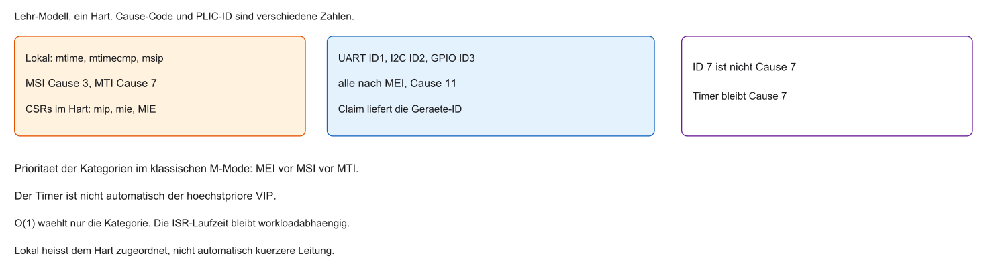
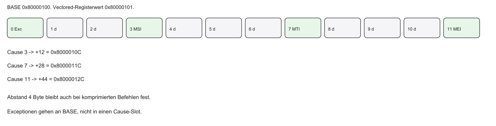
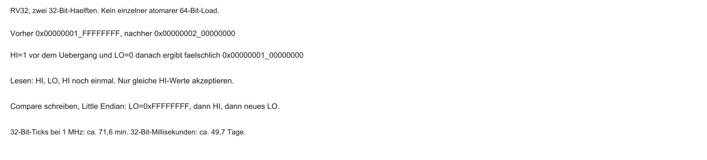
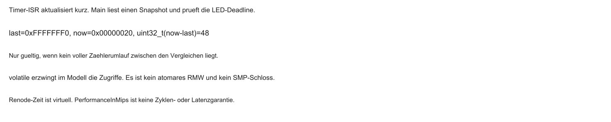

%%{init: {'theme': 'base', 'themeVariables': {'background': '#FFFFFF', 'primaryColor': '#FFFFFF', 'primaryBorderColor': '#E5E5EA', 'primaryTextColor': '#1D1D1F', 'lineColor': '#86868B', 'secondaryColor': '#F5F5F7', 'tertiaryColor': '#FFFFFF', 'mainBkg': '#FFFFFF', 'nodeBorder': '#E5E5EA', 'clusterBkg': '#F5F5F7', 'clusterBorder': '#E5E5EA', 'titleColor': '#1D1D1F', 'edgeLabelBackground': '#FFFFFF'}}}%%
flowchart LR
A[Block 1 und 2: Speicher] --> B[Block 3: Zeit und Ereignisse]
B --> C[Block 4: Aktorik]
style B fill:#FFFFFF,stroke:#E2001A,stroke-width:2px !important
03 · Interrupts & Timer
Mikrocomputertechnik 3 · Vom Hardware-Tick zur Ereignissteuerung
Prof. Dr.-Ing. Daniel Klünder
Willkommen zu Block 3!
- Willkommen zur dritten Vorlesung in Mikrocomputertechnik 3
- Rückblick Block 1 und 2: Speicherphysik und Caches
- Bisher: Daten möglichst schnell zur CPU bringen
- Heute: Zeit und asynchrone Ereignisse
- Ein System-Timer ist oft eine Zeitquelle, aber kein Pflicht-Tick jedes Betriebssystems
Einordnung im Semester
Anknüpfung: Cache und Lokalität
Kurz-Recap aus Block 2 (Labor folgt mit dem Übungsblatt):
- Spaltenweiser Zugriff kann den Cache durch schlechte Lokalität belasten
- Zeilenweiser Zugriff kann räumliche Lokalität verbessern; die Hit Rate hängt vom Modell ab
- Software und Hardware sind untrennbar verbunden
Von Daten zu Ereignissen
- 3 GHz ist eine illustrative CPU-Frequenz, nicht der Kurs-MCU-Takt
- Die Außenwelt (Taster, Sensoren) ist vergleichsweise langsam
- Eine enge Warteschleife verbraucht Ausführungszeit; die Energie hängt vom Betriebszustand ab
- Ziel: nützliche Arbeit, während auf Peripherie gewartet wird
- Ausweg: asynchrone, ereignisgesteuerte Systeme
CPU-Zeit sinnvoll nutzen
| Phase | Inhalt (schematisch) |
|---|---|
| Main | nützliche Arbeit |
| ISR | kurzes Event-Handling |
| Main | weiterrechnen |
Interrupt unterbricht nur kurz — kein Dauer-Polling.
Refresher MCT1: Polling vs. Interrupts
- Dauer-Polling (Busy Waiting) und gelegentliches Abfragen sind verschieden
- Interrupt: Ereignissignal, Freigabe, Handler, Rückkehr — keine gespeicherte Klingel für jede Flanke
- Hardware signalisiert Ereignis → CPU unterbricht die laufende Arbeit
- Danach Rückkehr in den unterbrochenen Kontext
Polling vs. Interrupt — Schema
Refresher MCT1: Das CSR-System
- Control and Status Registers: spezielle Maschinenregister
mstatus: globaler Interrupt-Schalter (u. a. MIE)mcause: Grund der Unterbrechung (Interrupt/Exception-Code)mepc: Rücksprungadresse des unterbrochenen Programmsmret: Rückkehr anhand vonmepc
Der rudimentäre MCT1-Trap-Handler
- In MCT1 oft ein einziger Einsprung über
mtvec - Alle Quellen landen an derselben Adresse
- Software muss per
mcauseverzweigen (if/else) - Direct mit Claim und Tabelle skaliert; eine lineare Statussuche ist das langsame Verfahren
uint32_t raw = read_csr(mcause);
int is_irq = (raw >> 31) & 1; /* RV32: Interrupt-Bit */
uint32_t code = raw & 0x7fffffffu; /* Cause-Code */
if (is_irq && code == 7) handle_timer();
else if (is_irq && code == 11) {
uint32_t id = plic_claim(); /* UART=1, nicht Cause 7 */
if (id == 1) handle_uart();
if (id != 0) plic_complete(id);
}Agenda für den heutigen Tag
- Grenzen des einfachen Traps
- Vektorisierte Interrupts (Vectored Mode)
- RISC-V CLINT — lokale Timer und Software-Interrupts
- RISC-V PLIC — Dirigent für externe Peripherie
- Nested Interrupts
- Brückenschlag zum Labor (System-Ticks, z. B. in Renode)
Lernziele Block 3
- Grenzen linearer Statusabfragen bewerten; Direct plus Claim bleibt zulässig
- Vektor-Tabelle und Vectored Mode in RISC-V verstehen
- CLINT (lokal) und PLIC (global) unterscheiden
- Mathematik hinter dem 64-Bit-System-Timer (
mtime) beherrschen - Gefahren und Lösungen bei Nested Interrupts kennen
Die Leitfrage des Tages
- Moderne MCUs: dutzende Peripheriegeräte können Interrupts auslösen
- Theoretisch sogar im selben Taktzyklus
- Wer darf zuerst? Was passiert mit den anderen?
- Leitfrage: Wie managt die CPU viele Alarme ohne Suchaufwand und ohne den Wichtigen zu verpassen?
- Antwort: spezialisierte Interrupt-Controller-Hardware
Viele Quellen — ein Problem

%%{init: {'theme': 'base', 'themeVariables': {'background': '#FFFFFF', 'primaryColor': '#FFFFFF', 'primaryBorderColor': '#E5E5EA', 'primaryTextColor': '#1D1D1F', 'lineColor': '#86868B', 'secondaryColor': '#F5F5F7', 'tertiaryColor': '#FFFFFF', 'mainBkg': '#FFFFFF', 'nodeBorder': '#E5E5EA', 'clusterBkg': '#F5F5F7', 'clusterBorder': '#E5E5EA', 'titleColor': '#1D1D1F', 'edgeLabelBackground': '#FFFFFF'}}}%%
flowchart LR
A[Timer] --> CPU[CPU]
B[UART Rx] --> CPU
C[Not-Aus] --> CPU
D[Sensoren] --> CPU
style C fill:#FFFFFF,stroke:#E2001A,stroke-width:2px !important
Das Skalierungsproblem
- MCT1: wenige Quellen (z. B. Taster, ein Timer)
- Echte SoCs: dutzende Interrupt-Quellen
- RISC-V-Kern: nur wenige feste Interrupt-Leitungen (u. a. Timer, Software, External)
- Folge: viele Geräte teilen sich typischerweise den External-Interrupt-Pfad
Der Software-Flaschenhals
- Alle teilen sich „External“ →
mcausesagt oft nur die Kategorie - Software muss Quellen abfragen: „Warst du das?“
- Lange
if/else-Ketten kosten viele Takte
Latenz-Explosion
- Latenz: Zeit vom Signal bis zur nützlichen ISR
- Best Case: Quelle steht oben in der Kette
- Worst Case: viele falsche Abfragen zuvor
- \(\mathcal{O}(n)\) beschreibt die Skalierung der gezeigten Suche, keine Nanosekunden und kein ABS-Nachweis
Das Prioritäten-Problem
- Gleichzeitige Events: wer gewinnt?
- Reine Software-Kette: Priorität oft „wer steht oben im Code“
- Schwer zur Laufzeit flexibel umzupriorisieren
- Wunsch: Hardware entscheidet den Gewinner automatisch
Die RISC-V-Architektur-Lösung
- Arbeitsteilung: CPU rechnet, Controller managen Alarme
- Externe Module sammeln, priorisieren und melden den Gewinner
- Direkter Kategorie-Einsprung oder Claim plus Tabelle; der PLIC springt nicht selbst in jede Gerätefunktion
- Trennung: lokale vs. globale Ereignisse
Interrupt-Controller vor der CPU
%%{init: {'theme': 'base', 'themeVariables': {'background': '#FFFFFF', 'primaryColor': '#FFFFFF', 'primaryBorderColor': '#E5E5EA', 'primaryTextColor': '#1D1D1F', 'lineColor': '#86868B', 'secondaryColor': '#F5F5F7', 'tertiaryColor': '#FFFFFF', 'mainBkg': '#FFFFFF', 'nodeBorder': '#E5E5EA', 'clusterBkg': '#F5F5F7', 'clusterBorder': '#E5E5EA', 'titleColor': '#1D1D1F', 'edgeLabelBackground': '#FFFFFF'}}}%%
flowchart LR
A[Sensoren] -->|Sammeln und Sortieren| B[Interrupt-Controller]
B -->|Wichtigster gewinnt| CPU[CPU]
style B fill:#FFFFFF,stroke:#E2001A,stroke-width:2px !important
Lokale vs. globale Interrupts
Lokale Interrupts (core-nah):
- Beispiele: System-Timer, Software-Interrupts
- Eigene Leitungen in den RISC-V-Kern
- Eigener Kategoriepfad, ohne Garantie kürzerer Leitung oder höchster Priorität
Globale Interrupts (Peripherie):
- UART, SPI, Taster, …
- Über den External-Interrupt-Pfad gebündelt
Die zwei Giganten: CLINT und PLIC
- CLINT (Core Local Interruptor): lokale Timer- und Software-Interrupts
- PLIC (Platform-Level Interrupt Controller): Dirigent für externe Geräte
- PLIC → External Interrupt an die CPU
CLINT und PLIC — Schema
%%{init: {'theme': 'base', 'themeVariables': {'background': '#FFFFFF', 'primaryColor': '#FFFFFF', 'primaryBorderColor': '#E5E5EA', 'primaryTextColor': '#1D1D1F', 'lineColor': '#86868B', 'secondaryColor': '#F5F5F7', 'tertiaryColor': '#FFFFFF', 'mainBkg': '#FFFFFF', 'nodeBorder': '#E5E5EA', 'clusterBkg': '#F5F5F7', 'clusterBorder': '#E5E5EA', 'titleColor': '#1D1D1F', 'edgeLabelBackground': '#FFFFFF'}}}%%
flowchart LR
T[Timer] --> CLINT
SW[Software] --> CLINT
CLINT -->|lokal| CPU[CPU]
U[UART] --> PLIC
S[SPI] --> PLIC
PLIC -->|External| CPU
style CLINT fill:#FFFFFF,stroke:#E2001A,stroke-width:2px !important
style PLIC fill:#FFFFFF,stroke:#E2001A,stroke-width:2px !important
Fragen? — Motivation
- Skalierungsproblem klar?
- Warum sind lineare
if/else-Ketten in ISRs riskant für Echtzeit? - Lokal vs. global?
Das Register mtvec im Detail
mtvec: Basisadresse der Trap-/Interrupt-Behandlung- In MCT1 oft vereinfacht als reine Handler-Adresse gesetzt
- Unterste 2 Bits sind MODE — keine Adressbits
- Obere Bits: BASE-Adresse
| Bits 31:2 | Bits 1:0 |
|---|---|
| BASE | MODE |
Das MODE-Feld in mtvec
- MODE = 0 (Direct): alle Traps zur Adresse BASE (MCT1-Verhalten)
- MODE = 1 (Vectored): Interrupts springen versetzt; Exceptions weiter zu BASE
- MODE 2 und 3: im Standard reserviert
Direct Mode (MODE = 0)
- Hardware setzt PC = BASE
- Alle Quellen landen an derselben Stelle
- Software liest
mcauseund verzweigt
Direct Mode — Schema
%%{init: {'theme': 'base', 'themeVariables': {'background': '#FFFFFF', 'primaryColor': '#FFFFFF', 'primaryBorderColor': '#E5E5EA', 'primaryTextColor': '#1D1D1F', 'lineColor': '#86868B', 'secondaryColor': '#F5F5F7', 'tertiaryColor': '#FFFFFF', 'mainBkg': '#FFFFFF', 'nodeBorder': '#E5E5EA', 'clusterBkg': '#F5F5F7', 'clusterBorder': '#E5E5EA', 'titleColor': '#1D1D1F', 'edgeLabelBackground': '#FFFFFF'}}}%%
flowchart LR
A[Timer] --> B["PC = BASE"]
C[UART] --> B
D[Exception] --> B
B --> E[Software: if/else]
style B fill:#FFFFFF,stroke:#E2001A,stroke-width:2px !important
Vectored Mode (MODE = 1)
- Jede Interrupt-Kategorie erhält einen Slot, nicht jede Peripheriequelle
- Hardware nutzt den Cause-Code ohne das Interrupt-Bit
- Keine Software-Kategorieauswahl vor dem Slot; Claim bleibt bei External nötig
- Der Slotabstand ist fest 4 Byte, unabhängig von der Befehlslänge
Vectored Mode — Schema
%%{init: {'theme': 'base', 'themeVariables': {'background': '#FFFFFF', 'primaryColor': '#FFFFFF', 'primaryBorderColor': '#E5E5EA', 'primaryTextColor': '#1D1D1F', 'lineColor': '#86868B', 'secondaryColor': '#F5F5F7', 'tertiaryColor': '#FFFFFF', 'mainBkg': '#FFFFFF', 'nodeBorder': '#E5E5EA', 'clusterBkg': '#F5F5F7', 'clusterBorder': '#E5E5EA', 'titleColor': '#1D1D1F', 'edgeLabelBackground': '#FFFFFF'}}}%%
flowchart LR
A[Timer] -->|Hardware| B["PC = BASE + Offset_Timer"]
C[UART, I2C, GPIO] -->|Cause 11| D["PC = BASE + 44, dann Claim"]
style B fill:#FFFFFF,stroke:#E2001A,stroke-width:2px !important
Wie Vectored Mode rechnet

Bei MODE = 1 und Interrupt:
\[ \mathrm{PC} = \mathrm{BASE} + 4 \times \mathrm{mcause.ExceptionCode} \]
- Faktor 4: fester Slotabstand, nicht die aktuelle Befehlslänge
- Beispiel: Timer Cause 7 ergibt BASE + 28 = 0x8000011C
Die Vektor-Tabelle
- An BASE liegt eine Tabelle aus Sprungbefehlen (
j/jal) - Eintrag \(k\) bei Offset \(4k\)
- Beispiel: bei Offset 28 der Sprung zur Timer-ISR
# Lehrcode — nicht assembliert. Slots 0–11, je 4 Byte.
.option push
.option norvc
.option norelax
.balign 4
vector_table_base:
jal x0, exc_entry # 0
jal x0, default_entry # 1
jal x0, default_entry # 2
jal x0, msi_entry # 3 Offset 12
jal x0, default_entry # 4
jal x0, default_entry # 5
jal x0, default_entry # 6
jal x0, mti_entry # 7 Offset 28
jal x0, default_entry # 8
jal x0, default_entry # 9
jal x0, default_entry # 10
jal x0, mei_entry # 11 Offset 44
.option popMemory Layout einer Vektor-Tabelle
- Oft früh im Flash (nahe Boot-Code), Section z. B.
.vectors - RISC-V: an
BASE + 4ksteht ein Befehl, kein geladener Zeiger - Cortex-M speichert u. a. Stackanfang und besondere Einträge, nicht nur Handlerzeiger
- Eine
.vectors-Section markiert Inhalt; der Linker legt Ort und Ausführbarkeit fest
Die vollständige Sprungtabelle steht auf der vorigen Folie. Kommentare ersetzen keine Slots.
Alignment-Vorgaben
- Unterste 2 Bits von
mtvec= MODE - BASE muss an den unteren Bits 0 sein (sonst Mode-Kollision)
- Tabelle mindestens 4-Byte-aligned; je nach System strengere Grenzen
- In Assembler:
.align
Der Performance-Gewinn
- Die gezeigte lineare Suche skaliert mit der Position, nicht jeder Direct-Handler
- Vectored wählt den Kategorie-Slot unabhängig von der Scanposition
- Gerät 50 hat keine eigene mtvec-Adresse; Claim bleibt nötig
- \(\mathcal{O}(1)\) ist keine Nanosekunden- oder Echtzeitgarantie
Fragen? — Vectored Mode
- Direct vs. Vectored klar?
- Warum \(\times 4\)?
- Vektor-Tabelle verstanden?
Was ist der CLINT?
- CLINT = Core Local Interruptor
- Verbreitetes Plattformmodul, keine ISA-weit feste Memory Map
- Kein generischer ISA-Befehl, sondern Systembaustein
- Aufgabe: lokale Zeit (Timer) und Software-Interrupts
- Typische Codes: Machine Timer (7), Machine Software (3)
Warum „Local“?
- Timer-Interrupts sind oft kritisch für OS (Scheduler, Context Switch)
- Sollen nicht hinter UART/SPI auf einem gemeinsamen Bus warten
- Der Timer wartet nicht auf eine PLIC-Gerätewahl; MEI hat im Modell Vorrang vor MSI vor MTI
Getrennte lokale und externe Pfade
%%{init: {'theme': 'base', 'themeVariables': {'background': '#FFFFFF', 'primaryColor': '#FFFFFF', 'primaryBorderColor': '#E5E5EA', 'primaryTextColor': '#1D1D1F', 'lineColor': '#86868B', 'secondaryColor': '#F5F5F7', 'tertiaryColor': '#FFFFFF', 'mainBkg': '#FFFFFF', 'nodeBorder': '#E5E5EA', 'clusterBkg': '#F5F5F7', 'clusterBorder': '#E5E5EA', 'titleColor': '#1D1D1F', 'edgeLabelBackground': '#FFFFFF'}}}%%
flowchart LR
CLINT[CLINT Timer] -->|lokal| CPU[CPU]
PLIC[PLIC] -->|External| CPU
style CLINT fill:#FFFFFF,stroke:#E2001A,stroke-width:2px !important
Das Herz der Zeit: mtime
- Register
mtime(Machine Time) im CLINT - Zählt mit dem Takt eines Hardware-Oszillators
- Startwert und Betriebszustand sind plattformspezifisch, nicht automatisch Uptime seit Einschalten
- Zeit seit Softwarestart ist eine Differenz zu einem gespeicherten Startwert
Das 64-Bit-Problem auf RV32

- RV32: native Wortbreite 32 Bit
- 32-Bit-Zähler bei 1 MHz: Overflow nach \(\approx 71\) Minuten
- Deshalb:
mtimeim CLINT 64 Bit — auch auf RV32 - Overflow erst nach astronomisch langen Zeiten (bei üblichen Takten)
64-Bit lesen auf RV32
- CLINT liefert
mtimealsmtime_lo/mtime_hi - Race: Overflow zwischen den beiden Reads möglich
- Sicheres Muster:
hivor und nachloprüfen
Der Auslöser: mtimecmp
mtimecmp(Machine Time Compare), ebenfalls 64 Bit- Software schreibt einen Zukunftswert (Eieruhr)
- Beispiel: jetzt \(= 100\), Intervall \(50\) →
mtimecmp = 150
Hardware-Logik im CLINT
- 64-Bit-Komparator: in jedem Takt
mtime >= mtimecmp? - Bei wahr: lokaler Timer-Interrupt an die CPU
- CPU springt (im Vectored Mode) zur Timer-ISR
CLINT-Komparator — Schema
%%{init: {'theme': 'base', 'themeVariables': {'background': '#FFFFFF', 'primaryColor': '#FFFFFF', 'primaryBorderColor': '#E5E5EA', 'primaryTextColor': '#1D1D1F', 'lineColor': '#86868B', 'secondaryColor': '#F5F5F7', 'tertiaryColor': '#FFFFFF', 'mainBkg': '#FFFFFF', 'nodeBorder': '#E5E5EA', 'clusterBkg': '#F5F5F7', 'clusterBorder': '#E5E5EA', 'titleColor': '#1D1D1F', 'edgeLabelBackground': '#FFFFFF'}}}%%
flowchart LR
A[mtime] --> C{"mtime >= mtimecmp?"}
B[mtimecmp] --> C
C -->|ja| D[Timer-Interrupt]
style C fill:#FFFFFF,stroke:#E2001A,stroke-width:2px !important
Quittieren des Timer-Interrupts
- Vergleich ist \(\ge\): Interrupt bleibt aktiv, solange
mtime >= mtimecmp - Ohne Update: sofort erneuter Eintritt nach
mret - Pflicht in der ISR: neuen Zukunftswert nach
mtimecmpschreiben
/* Lehrcode — nicht kompiliert. Absolutes Raster, kein Wrap im Zeitraum. */
static uint64_t next_deadline;
static uint64_t boot_time;
static volatile uint32_t elapsed_ms_snapshot;
static uint32_t handled_timer_irqs;
void timer_isr(void) {
uint64_t now = read_mtime();
handled_timer_irqs++;
if (now >= next_deadline) {
uint64_t k = (now - next_deadline) / TICKS_PER_MS + 1u;
next_deadline += k * TICKS_PER_MS;
write_mtimecmp(next_deadline);
}
elapsed_ms_snapshot = (uint32_t)((now - boot_time) / TICKS_PER_MS);
}Die Vier-Schritt-Schleife ist eine andere Strategie: bei 15,3 ms endet sie bei 16,3 ms statt 16,0 ms.
Konzept: Der System-Tick
- Wofür nutzen wir den Timer in der Praxis?
- Ein periodischer Tick ist ein Softwarekonzept, kein Pflichtbaustein jedes Betriebssystems
- SysTick ist der Name eines ARM-Timers, hier nicht ein RISC-V-Register
- Die Zeitbasis kommt aus
mtime, nicht aus der Zahl der ISR-Aufrufe - Ein Tick kann den Scheduler anstoßen, erzwingt aber keinen Taskwechsel
Warum oft 1 Millisekunde?
- 1 ms ist ein Lehrkompromiss, kein universeller Sweetspot
- Aufwand, Auflösung und Frist hängen vom System ab
- Menschliche Wahrnehmung ersetzt keine Regelungsfrist
Mathematik: Takte berechnen
mtimezählt Oszillator-Takte, keine Sekunden- Umrechnung in Software nötig
- Beispiel: Quarz \(10\,\mathrm{MHz}\) \(\Rightarrow\) \(10^{7}\) Takte/s
- Pro ms: \(10^{7}/1000 = 10^{4}\) Takte
- Nächster Alarm im absoluten Modell:
next_deadline, nichtnow + 10000 now + 10000bleibt nur das relative Gegenbeispiel und driftet
Software-Interrupts im CLINT
msipist ein Pending-Bit pro Hart, Cause 3- Die Nutzdaten liegen daneben im Speicher, nicht im Bit selbst
- MSI ist nicht automatisch der Deferred-Pfad unter dem Timer
Inter-Processor Interrupts (IPI)
Vorgriff auf Block 9 (Multicore):
- Zwei Harts, ein
msip-Bit je Hart - Hart A setzt das Bit von Hart B. B erhält Cause 3 und löscht es wieder
MMIO beim CLINT
mtime/mtimecmpsind keine CSRs (csrw), sondern Memory-Mapped Register- Zugriff über normale C-Pointer auf physische Adressen
- Basisadresse abhängig vom SoC (bei SiFive oft ab
0x02000000)
C-Beispiel: System-Tick initialisieren
/* Lehr-Modell, keine geprüfte SiFive-Map */
#define CLINT_MTIMECMP 0x02004000u
#define CLINT_MTIME 0x0200BFF8u
static uint64_t read_mtime(void) {
volatile uint32_t *mt = (volatile uint32_t *)CLINT_MTIME;
uint32_t hi, lo;
do {
hi = mt[1];
lo = mt[0];
} while (hi != mt[1]); /* nur ein konsistenter Snapshot */
return ((uint64_t)hi << 32) | lo;
}
static void write_mtimecmp(uint64_t v) {
volatile uint32_t *cmp = (volatile uint32_t *)CLINT_MTIMECMP;
cmp[0] = 0xffffffffu; /* kein zu kleiner Zwischenwert */
cmp[1] = (uint32_t)(v >> 32);
cmp[0] = (uint32_t)v;
}
void init_system_tick(void) {
/* Stack und mtvec müssen schon stehen */
boot_time = read_mtime();
next_deadline = boot_time + 10000u; /* 1 ms bei 10 MHz */
write_mtimecmp(next_deadline);
set_csr(mie, (1u << 7)); /* MTIE */
set_csr(mstatus, MSTATUS_MIE);
}- Kein 64-Bit-Store auf RV32. Die drei 32-Bit-Schreibungen sind die Compare-Sequenz.
- Adressen sind das Lehr-Modell, nicht das Labor-Datenblatt.
Zusammenfassung CLINT
- Lokale, zeitkritische Ereignisse
- 64-Bit-Zähler
mtime, Comparemtimecmp - Soft-Interrupts melden Arbeit oder einen anderen Hart; spätere Bearbeitung ist Strategie, kein eingebauter Niedrigprioritätsmodus
- Konfiguration über MMIO
Fragen? — CLINT und System-Tick
- Warum 64-Bit
mtime? - Race Condition beim 64-Bit-Lesen auf RV32?
- Warum sofort erneuter Timer-Interrupt ohne neues
mtimecmp?
Auftritt PLIC
- PLIC = Platform-Level Interrupt Controller
- Dirigent für dutzende externe Geräte
- Sammelt Signale, priorisiert, meldet ein External Interrupt an den Kern
PLIC-Architektur
- Gateways: Anbindung der Sensoren/Peripherie
- Arbitration: Schiedsrichter über Prioritäten
- Targets: typischerweise CPU-Kerne
- M:N-Router (viele Quellen → wenige Kerne)
PLIC — Schema
%%{init: {'theme': 'base', 'themeVariables': {'background': '#FFFFFF', 'primaryColor': '#FFFFFF', 'primaryBorderColor': '#E5E5EA', 'primaryTextColor': '#1D1D1F', 'lineColor': '#86868B', 'secondaryColor': '#F5F5F7', 'tertiaryColor': '#FFFFFF', 'mainBkg': '#FFFFFF', 'nodeBorder': '#E5E5EA', 'clusterBkg': '#F5F5F7', 'clusterBorder': '#E5E5EA', 'titleColor': '#1D1D1F', 'edgeLabelBackground': '#FFFFFF'}}}%%
flowchart LR
U[UART] -->|ID 1| PLIC
I[I2C] -->|ID 2| PLIC
S[SPI] -->|ID 3| PLIC
PLIC -->|Gewinner| CPU[Core: Ext. Interrupt]
style PLIC fill:#FFFFFF,stroke:#E2001A,stroke-width:2px !important
Zuweisung von Prioritäten und Enables
- Jedes Gerät hat eine ID
- Pro Gerät: Priority-Register (MMIO); typisch \(0\) = aus, größer = höher
- Zusätzlich: Enable-Bits pro Target — ohne Enable bleibt die Quelle stumm
- Prioritäten und Enables zur Laufzeit per Software änderbar
Priority Thresholds
- Pro Target (Kern): Threshold-Register
- Weiterleitung nur wenn Priorität strikt größer als Threshold
- Beispiel: Threshold \(= 5\) → Prio 3 wird blockiert, Prio 7 weckt die CPU
Das Pending-Array
- Ein angenommenes Pending-Bit speichert wartend oder nicht, nicht jede wiederholte Flanke
- Threshold filtert die Benachrichtigung, nicht den expliziten Claim
Zwei-Stufen-Handshake
- External Interrupt:
mcausesagt oft nur „PLIC / External“ (Code 11) - CPU kennt die Quellen-ID noch nicht
- Pflicht: Claim (ID lesen) und später Complete (fertig melden)
Schritt 1: Claim
- Ein Claim kann 0 liefern: kein Interrupt
- ID 0 nicht abschließen und keinen Handler aufrufen
Atomares Lesen und Löschen
- Claim-Read löscht atomar das zugehörige Pending-Bit
- Eine Quelle wird einem Claim zugeordnet; andere Harts können andere wartende Quellen erhalten
- 0 folgt nur, wenn für dieses Ziel nichts Claimbares bleibt
Claim und Complete
- Eine Quelle je Eintritt. Weitere Pending-Quellen kommen mit dem nächsten External Interrupt.
- Unbekannte IDs werden abgeschlossen, damit der PLIC nicht hängen bleibt.
PLIC in Software steuern (MMIO)
- Prioritäten, Enables, Threshold, Claim/Complete — alles MMIO
- Keine speziellen CSR-Befehle: Pointer in C
- Trigger am Gateway: Level (Leitung High) oder Edge (Flanke) — oft im Gerät konfigurierbar
Gegenüberstellung: CLINT vs. PLIC
| CLINT (lokal) | PLIC (global) | |
|---|---|---|
| Zuständigkeit | Timer, Soft/IPI | UART, SPI, GPIO, … |
| Latenz | minimal (core-nah) | etwas höher (Systembus) |
| Prioritäten | fest/kritisch | frei konfigurierbar |
| Handshake | mtimecmp neu setzen |
Claim und Complete |
Fragen? — PLIC
- Pending vs. Threshold klar?
- Warum Claim/Complete zwingend?
- Warum atomarer Claim-Read?
Standardverhalten: „taube“ CPU
- Bei Trap setzt die Hardware
MIEinmstatusautomatisch auf 0 - Während der ISR: weitere Interrupts blockiert bis
mret - Schützt vor Chaos — Nachteil bei langen ISRs
Problem blockierender ISRs
- Langsame ISR (z. B. I2C, 5 ms) bei SysTick alle 1 ms
- Mit
MIE = 0verpassen wir mehrere Ticks - Zeitbasis und Scheduler leiden
- Regel: ISRs so kurz wie möglich halten
Lösung: Nested Interrupts
- Nesting ist eine gewählte Politik, keine automatische Regel „nur höhere Priorität“
- Der Timer unterbricht eine externe ISR nicht kraft CLINT-Vorrang
- Kurze, nicht verschachtelte ISRs bleiben das Hauptmodell
Clobbering von mepc
- Ein Hart hat im M-Mode ein
mepc, keinen Hardware-Stack mehrerer Rücksprünge - Der zweite Trap überschreibt
mepc; ohne Softwareframe fehlt die äußere Adresse - Das muss nicht sofort abstürzen, der Ablauf ist aber falsch
Nesting korrekt: zuerst Stack, dann MIE
Konzeptioneller Pseudocode, keine geprüfte sichere ISR:
- Acht Byte und das Überschreiben von t0/t1 reichen nicht.
- MIE=1 erlaubt nicht nur höherpriore Quellen.
- Der Grundkurs bleibt bei kurzen, nicht verschachtelten ISRs.
Gefahren von Nested Interrupts
- Stack Overflow bei tiefer Verschachtelung
- Deadlocks zwischen ISRs (Locks / geteilte Ressourcen)
- Praxis: Nesting nur wenn nötig; ISRs kurz halten; Arbeit deferred in
main
Fragen? — Nesting
- Warum überschreibt Hardware
mepcbeim Nesting? - Wie schützt man sich vor Clobbering?
- Warum Nesting möglichst vermeiden?
Ausblick Labor: System-Tick
Geplantes Laborziel:
- CLINT so konfigurieren, dass er periodisch (z. B. 1 ms) feuert
- In der ISR einen Zeit-Snapshot aus
mtimeveröffentlichen, nicht jeden Aufruf als Millisekunde zählen mainsteuert die LED; ein Toggle je Sekunde ergibt zwei Sekunden für An und Aus- Renode und Toolchain sind für dieses Labor nicht ausgeführt
Renode und die Zeit
- Renode verwaltet virtuelle Modellzeit, getrennt von der Hostuhr
- MIPS modellieren Instruktionsleistung, keine zyklengenaue Chiplatenz
- Ein Lauf liegt hier nicht vor
GCC: __attribute__((interrupt))
- ISR muss mit
mretenden, nicht mit normalemret - Attribut:
__attribute__((interrupt))— GCC erzeugt Prolog/Epilog - Normale ABI: Callee darf
t-Register zerstören; eine ISR darf keine Spuren hinterlassen - Mit dem Attribut: berührte Register (inkl. temporärer) werden gesichert
Background Task und Foreground ISR

- Foreground: die ISR veröffentlicht vergangene Millisekunden aus
mtime - Background:
mainplant die LED auf einem Sollraster und setzt den Zähler nicht zurück
Geteilte Variablen
- Compiler-Caching:
volatilefür von ISR geschriebene, inmaingelesene Variablen - Atomarität: 64-Bit auf RV32 kann „reißen“ — beim Lesen ggf. kurz Interrupts sperren
Zusammenfassung Block 3
- CLINT: eigener Pfad ohne Latenzgarantie; Zeit aus
mtime, Freigabe über MTIE und MIE - PLIC: Geräte-ID per Claim, Cause 11 ist nur die Kategorie
- Vectored Mode: Kategorie-Slot, nicht eine Adresse je Gerät
- Nesting braucht Kontext und Masken, nicht nur
mepcauf dem Stack - Das GCC-Attribut erzeugt Ein- und Austritt, initialisiert aber weder
mtvecnoch Geräte
Vielen Dank — wir sehen uns im Labor.